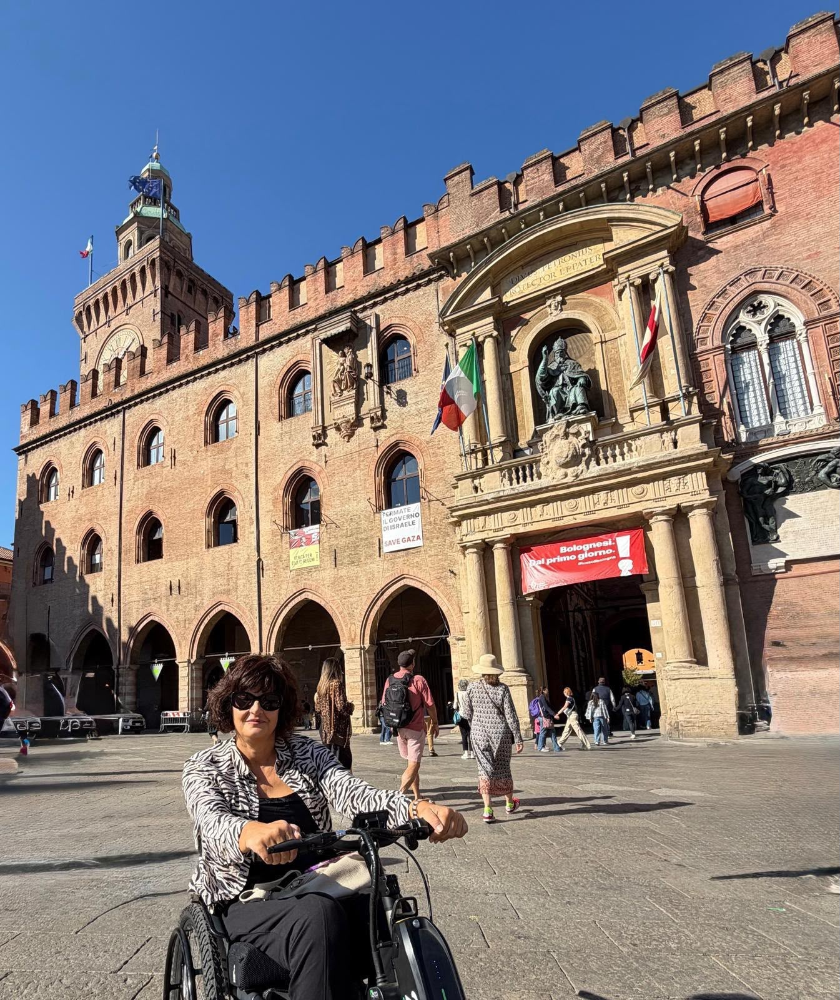
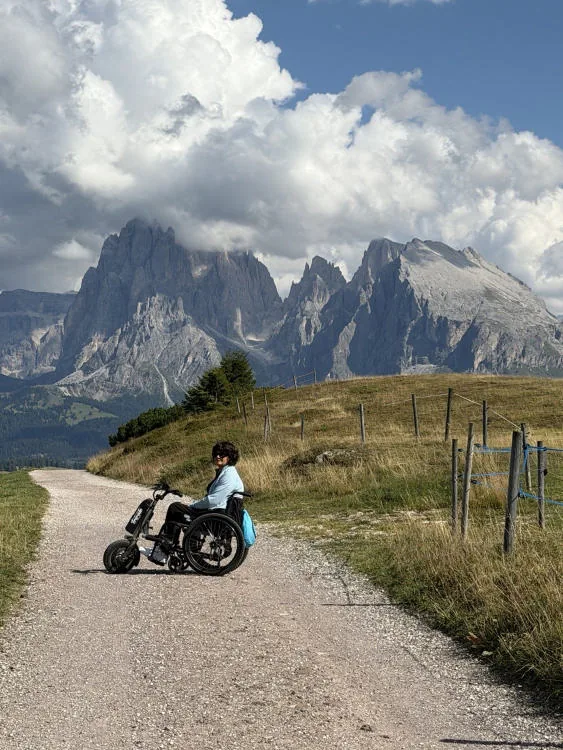
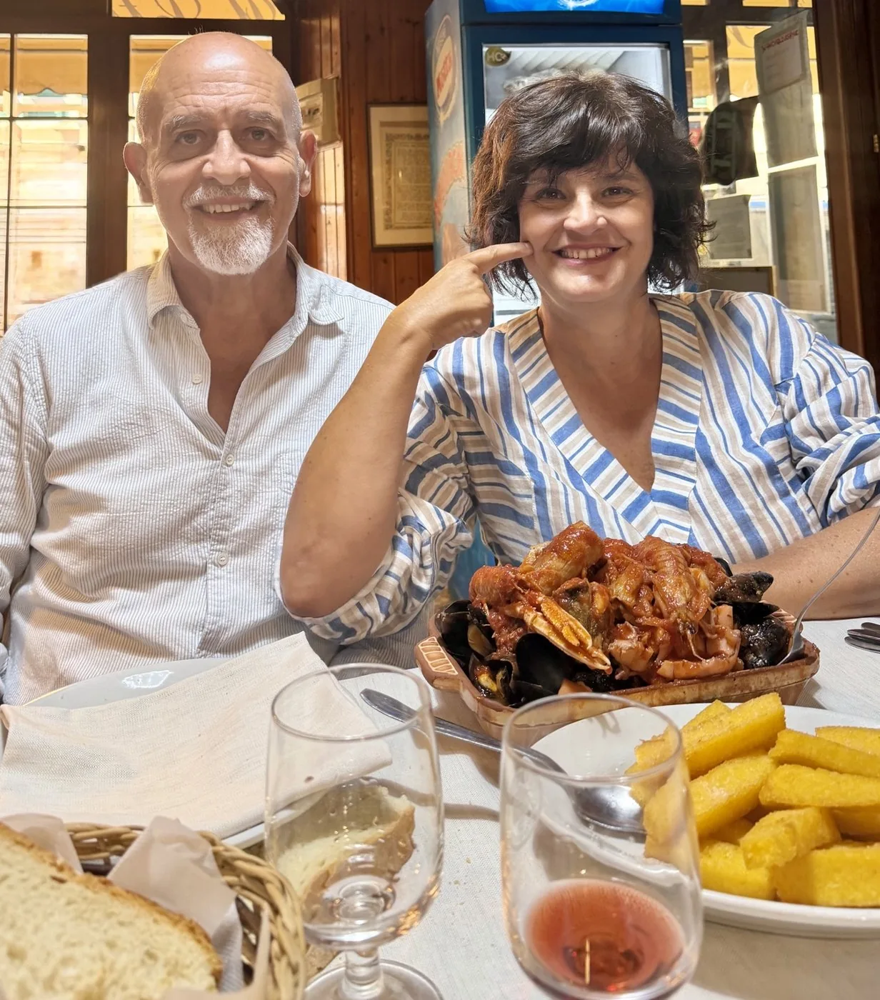
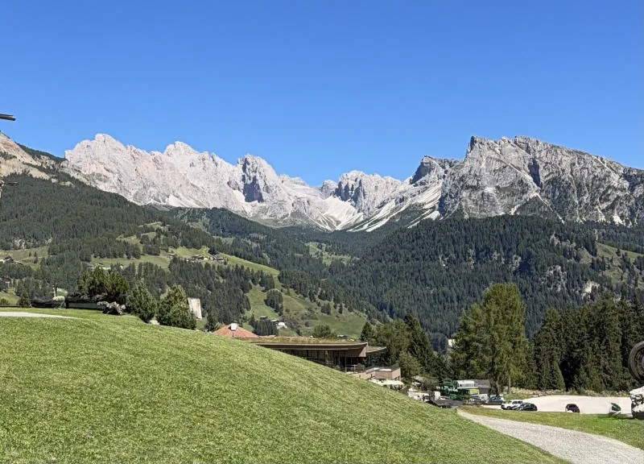
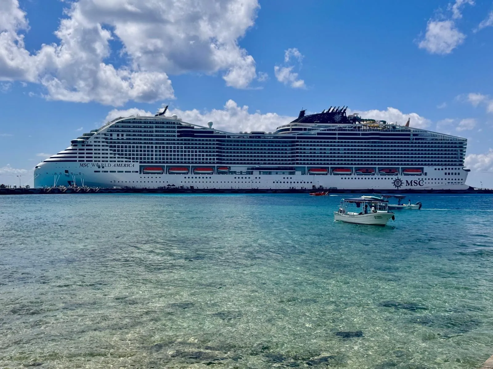

Accessible travel blog
Travelling on my wheels
no surprises
I write about real trips, tested on my own wheels: where you can go, where you can get in, where to park and where to find an accessible toilet.




About me
Hello, I’m Anna
I love travelling, discovering new places, being out in nature, eating well and trying new experiences.
At a certain point in my life, the wheelchair became part of my everyday life.
And with it, the way I travel changed too: before setting off I have to search, ask and check whether a place is truly accessible and whether I can enjoy it on my wheels.
And if I have to do all this research anyway, why not share what I find out with other people?
That’s how Travelling on my wheels was born.
I’m not an accessibility expert. I’m a traveller who tries places out in person and tells her own experience, trying to share practical information and, above all, no surprises.
With my wheelchair and my Triride, I want to keep going out, travelling, discovering and living.
My Triride
My Triride is a Special Compact HT All Road, a model I chose so I can get around more freely, even on routes that aren’t always easy.
I bought the off-road wheels mainly to tackle mountain trails, but they’ve turned out to be really useful in everyday life too: they make it easier to get over small obstacles, like going up and down kerbs, so getting around town is smoother.
Because that’s exactly my goal: to enjoy travelling without giving up on exploring, from city streets to trails deep in nature, on my own wheels!
Because the wheelchair is part of my journey, but it isn’t my whole journey.
Before you set off
How to read my stories
Every story uses the same signs, always the same, so you can spot the practical information at a glance.
Stars: how easy the route is
Stars, from 1 to 5, measure how easy the route is with my Triride and with the help described in the story. They are not a rating of how beautiful a place is.
- 5 stars: no difficulty
- 4 stars: generally easy going
- 3 stars: some stretches need help
- 2 stars: more marked difficulties
- 1 star: very demanding route
A small note: the routes I choose are researched and assessed for accessibility first, then checked on the spot. That’s why the ratings are often high: I like to set off prepared and travel with no surprises!
Green boxes: accessibility
Useful information for wheelchair users is in a green box, right at the point in the story where you need it: entrances, ramps, toilets, parking, lifts.
Accessibility · Toilet
At Surfer Joe, near the Aquarium, we found an accessible toilet during our visit.
Yellow boxes: good to know before you go
A step at the entrance, a parking space to look for in advance: the warnings that save you from nasty surprises.
Good to know before you go
Entrance: there is a step. I had to unhook the Triride and use the manual wheelchair; my companion helped me get over it.
Hearts: how it went overall
At the end of every story there is my “no surprises” summary: the table with stars and short notes, a reminder of the accessible toilets we found and a rating, in hearts, of the experience as a whole.
Overall experience 5 hearts out of 5
Cutlery: the taste rating
When I tell you about a lunch or a dinner, I rate the taste with cutlery icons, from 1 to 5: you’ll find it in the “no surprises” table, alongside the stars.
Taste rating 4 out of 5
My trips
Where shall we go?
Choose how much time you have: one day, a few nights or a long journey.

Weekends and stays
Several nights away: hotels, walks, cable cars and mountain huts, day by day.
Stories
In Italy and around the world
My travel map
A pin for every place I have written about: tap it to see the trip and open the story.
Just published